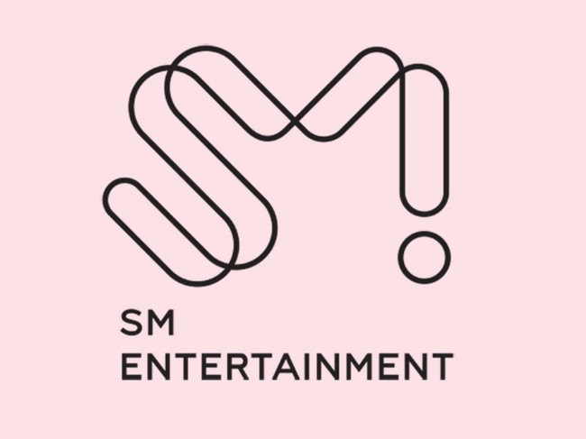
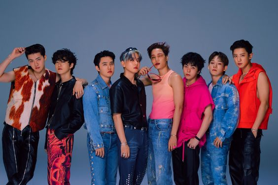
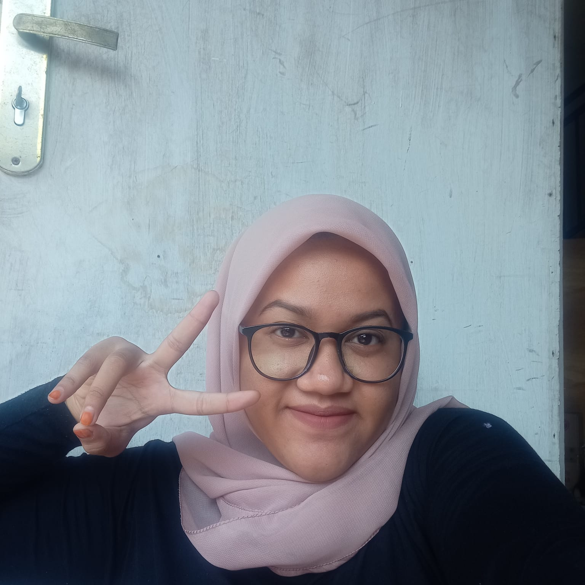

Get To Know About Me !
Part 2
SM Entertaiment
SM Entertainment, didirikan pada tahun 1995 oleh Kepala Produser Lee Soo Man, adalah perusahaan pertama di industri yang memperkenalkan sistem casting, pelatihan, produksi, dan manajemen yang sistematis, dan telah menemukan konten unik dengan menunjukkan permintaan akan tren musik dan budaya. SM Entertainment memasuki pasar global menggunakan strategi globalisasi dan lokalisasi melalui teknologi budaya dan telah menjadi perusahaan hiburan terkemuka di Asia. Pada tahun 1997, SM Entertainment menjadi perusahaan pertama di industri hiburan Korea yang memasuki pasar luar negeri dan meraih prestasi luar biasa sebagai pemimpin Hallyu, atau Korean Wave. SM Entertainment telah berhasil menginjakkan kaki di Amerika Utara, Amerika Selatan, dan Eropa sambil mempertahankan basisnya di Asia, dan telah meningkatkan merek nasional Korea serta mendorong pertumbuhan industri budaya. SM Entertainment mempromosikan budaya unik Korea melalui cara-cara seperti K-POP, alfabet Korea, dan masakan Korea, melalui konten 'Made by SM' di seluruh dunia, dan meningkatkan prestise Korea dengan mempromosikan konsumsi bahasa Korea. produk merek. Secara khusus, SM Entertainment berfokus pada nilai budaya yang dapat memimpin perekonomian nasional dan berkontribusi terhadap pertumbuhannya melalui slogan, "Budaya Pertama, Ekonomi Berikutnya". SM Entertainment akan terus memimpin industri hiburan sampai Korea menjadi 'Pembangkit Listrik Budaya' dan juga 'Pembangkit Listrik Ekonomi' berdasarkan gagasan bahwa perekonomian kita akan mencapai puncaknya hanya ketika budaya kita memenangkan hati seluruh dunia. Sebagai perusahaan yang menghasilkan konten budaya dan penghibur terbaik dengan menggunakan teknologi budaya tercanggih, SM Entertainment bertujuan untuk menyentuh hati masyarakat dan mempromosikan budaya Korea di setiap sudut dunia dengan tujuan berkontribusi terhadap perekonomian nasional. pertumbuhan dan kehidupan yang lebih sejahtera bagi semua orang. Visi Manajemen dan Metode Implementasinya : 1.Grup Hiburan No.1 di Asia : Untuk tumbuh menjadi grup hiburan total yang mewakili Asia, SM Entertainment bergerak maju secara agresif dengan strategi berikut. 2.Menjadi Penyedia Konten Digital Terbaik untuk Memimpin Pasar Internet dan Seluler : Gelombang Korea telah menyebar dengan cepat ke seluruh dunia melalui platform media baru, termasuk YouTube, Facebook, dan Twitter. SM Entertainment akan membagikan konten Made By SM ke seluruh dunia dan membangun komunitas virtual untuk generasi global. 3.Perusahaan yang Benar-Benar Global : SM Entertainment akan tumbuh menjadi grup hiburan yang mewakili Asia melalui jaringan afiliasi globalnya, seperti SM Entertainment Japan, SM Entertainment Beijing, SM True, Dream Maker Entertainment, dan SM Entertainment USA, serta grup hiburan lain di luar negeri.
EXO
 EXO adalah sebuah grup vokal pria Korea Selatan-Tiongkok yang berbasis di Seoul. Grup ini beranggotakan sembilan orang: Suho, Baekhyun, Chanyeol, D.O., Kai, Sehun, Xiumin, Lay, dan Chen. Grup ini dibentuk oleh SM Entertainment pada tahun 2011 dan debut pada tahun 2012. Musik mereka memasukkan aliran seperti hip hop, R&B kontemporer, dan juga aliran Musik dansa elektronik seperti house, trap, dan synth-pop. Exo merilis dan membawakan musik dalam bahasa Korea, Mandarin, dan Jepang. Grup ini menempati posisi lima besar sebagai selebritas paling berpengaruh dalam daftar Forbes Korea Power Celebrity tiap tahun dari 2014 sampai 2018, dan telah dijuluki "boyband terbesar di dunia" dan "kings of K-pop" oleh media. Grup ini debut dengan 12 anggota yang dibagi menjadi dua subgrup: EXO-K (Suho, Baekhyun, Chanyeol, D.O., Kai, dan Sehun) dan EXO-M (Xiumin, Lay, Chen, dan para mantan anggota seperti Kris, Luhan, dan Tao). EXO-K dan EXO-M membawakan musik dalam bahasa Korea dan Mandarin, masing-masing, sampai tahun 2014. EXO telah menjadi satu grup sejak saat itu, dengan tetap merilis dan membawakan musik dalam beberapa bahasa. Setelah keluarnya Kris, Luhan, dan Tao di tengah tuntutan hukum pada tahun 2014 dan 2015, grup ini tetap bertahan dengan sembilan anggota. Sejak tahun 2016, Chen, Baekhyun, dan Xiumin juga telah merilis musik dan tampil sebagai sebuah sub-unit bernama Exo-CBX. Semua anggota EXO juga mempunyai karier solo dalam bidang seperti musik, film, dan televisi. Album pertama EXO XOXO (2013), yang menghasilkan hit terobosan "Growl", mendapat sukses kritis dan komersial. Lagu ini terjual lebih dari satu juta eksemplar, membuat EXO menjadi artis Korea terlaris dalam 12 tahun. Album-album dan EP berikutnya juga mendapat penjualan tinggi, dengan semua album studio masing-masing terjual lebih dari satu juta eksemplar. Album studio XOXO (2013), Exodus (2015) dan Ex'Act (2016), 'bersama dengan EP ketiga EXO Overdose (2014), memenangkan EXO beberapa penghargaan termasuk empat kemenangan berturut-turut masing-masing Disc Daesang di Golden Disc Awards,Album of the Year di Mnet Asian Music Awards dan Daesang award di Seoul Music Awards. Album keempat mereka The War (2017) menjadi album terlaris mereka sesudah dirilis, terjual lebih dari 1.6 juta eksemplar di Korea Selatan dan memenangkan penghargaan Artist of the Year kedua berturut-turut di Melon Music Awards, dan juga sebuah rekor penghargaan Album of the Year kelima berturut-turut di Mnet Asian Music Awards. Album kelima EXO Don't Mess Up My Tempo (2018) merupakan album dengan posisi tertinggi mereka di Billboard 200 AS, debut di nomor 23. Album ini juga merupakan album terlaris mereka dengan lebih dari 1.9 juta eksemplar di Korea Selatan. Sejak tur utama EXO tahun 2014, grup ini telah tampil di lebih dari 100 konser dalam empat tur dan telah berpartisipasi dalam beberapa tur gabungan. EXO juga dikenal atas karya di luar musik,yang termasuk kesepakatan sponsor dengan merek-merek seperti Nature Republic dan Samsung, dan aksi-aksi amal seperti Smile For U, sebuah proyek gabungan dari SM Entertainment dan UNICEF yang dimulai pada tahun 2015, yang mana EXO terus ikut berpartisipasi.
List Lagu EXO
- Mama
- History
- Overdose
- Love Me Right
- Call Me Baby
- Growl
- Wolf
- Lucky One
- Monster
- Lotto
- Ko Ko Bop
- The Eve
- Power
- Universe
- Electric Kiss
- Tempo
- Love Shot
- Obsession
- Don't Fight The Feeling
- Cream Soda
- Hear Me Out
- dan masih banyak lagi
Tentang EXO
| No. |
Topik |
Deskripsi |
| 1. |
We Are One |
selogan perkenalan & memiliki arti selalu bersama/jadi satu |
| 2. |
EXO-L/Aeri/Eri |
official nama penggemar & panggilan khusus untuk penggemar |
| 3. |
L-1485 |
L diambil dari EXO-L sebagai nama fandom & 1485 mengindikasikan 5 Agustus 2014 tahun diresmikannya EXO-L |
| 4. |
Emperor Of KPop |
meraih streaming kumulatif tertinggi di platform Musik Melon sebanyak lebih dari 14,678 Miliar streaming |
| 5. |
Sextuple Million Seller |
menjual lebih dari satu juga kopi untuk keenam kalinya pada Album Dont Fight The Feeling |
| 6. |
Nation's Pick |
menetapkan boyband EXO sebagai Duta Pariwisata Korea Selatan pada 23 Juni 2018 |
| 7. |
EXO = Vocal + Visual |
EXO dari SM Entertaiment (ytta) |
| 8. |
EXO is 9 |
hari ini dan seterusnya EXO akan selalu ber-9 orang |
| 9. |
Proud To Be EXO-L |
gausah diragukan kalo nge-fan sama EXO, bener-bener wah banget dan gabisa dijelaskan pake kata-kata |
Sosial Media Instagram EXO dan Youtube EXO
Yang Mengerjakan Tugas Ini :
| Nama |
: |
Rosydiah Sabila Hanifah |
| NIM |
: |
11210251000024 |
| Kelas |
: |
5C |
| |
|

|